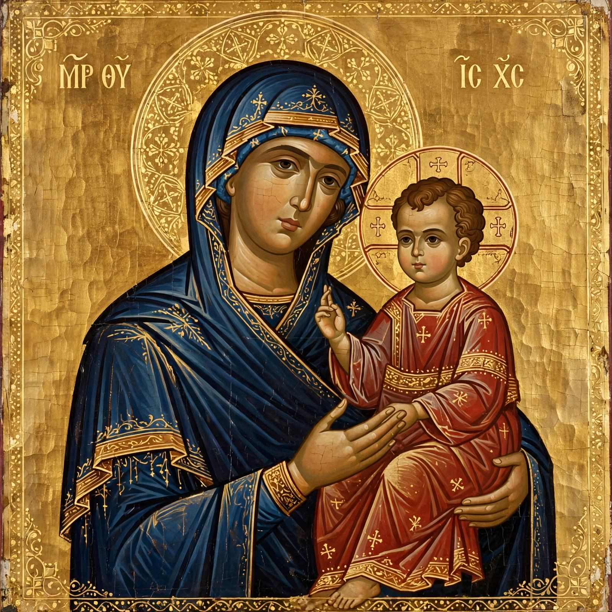

Mariology
Mariology is the theological study of Mary, the mother of Jesus. Mariology seeks to relate doctrine about Mary to other doctrines of the faith, such as those concerning Jesus and notions about redemption, intercession and grace. Christian Mariology aims to place the role of the historical Mary in the context of scripture, tradition and the teachings of the Church on Mary.

In terms of social history, Mariology may also be the study of the veneration of Mary ("Mariolatry" in polemical usage) and the history of Marian art and architecture throughout the centuries.
History
The title Theotokos ("God-bearer") was affirmed for Mary at the Council of Ephesus in 431, against the teaching of Nestorius. Marian doctrine developed over the following centuries: the perpetual virginity of Mary was affirmed at the Lateran Council of 649, and devotion to Mary flowered in the medieval period through feasts, hymns such as the Salve Regina, and pilgrimage.
Dogmas and doctrines
The Roman Catholic Church professes four Marian dogmas:
- Divine motherhood — Mary is truly the Mother of God (Theotokos).
- Perpetual virginity — Mary was a virgin before, during and after the birth of Jesus.
- Immaculate Conception — Mary was conceived without original sin, defined by Pope Pius IX in Ineffabilis Deus (1854).
- Assumption — Mary was taken body and soul into heavenly glory, defined by Pope Pius XII in Munificentissimus Deus (1950).
Titles such as Mediatrix and Co-Redemptrix are discussed by theologians but have not been dogmatically defined. The Eastern Orthodox Church shares much Marian doctrine, celebrating her Dormition (falling asleep) rather than the Assumption in its Western formulation, and generally does not accept the Immaculate Conception as defined in the West.
Mariology in other traditions
Protestant traditions vary widely: Martin Luther retained several Marian beliefs, including her perpetual virginity and title of Mother of God, while later Protestantism generally reduced Marian devotion, regarding much of it as unscriptural. In Islam, Mary (Maryam) is honoured as the mother of the prophet Jesus and is the only woman named in the Quran, where a chapter (Surah Maryam) bears her name.
See also
References
Haffner, Paul (2004). The Mystery of Mary. Gracewing.
Pelikan, Jaroslav (1996). Mary Through the Centuries: Her Place in the History of Culture. Yale University Press.